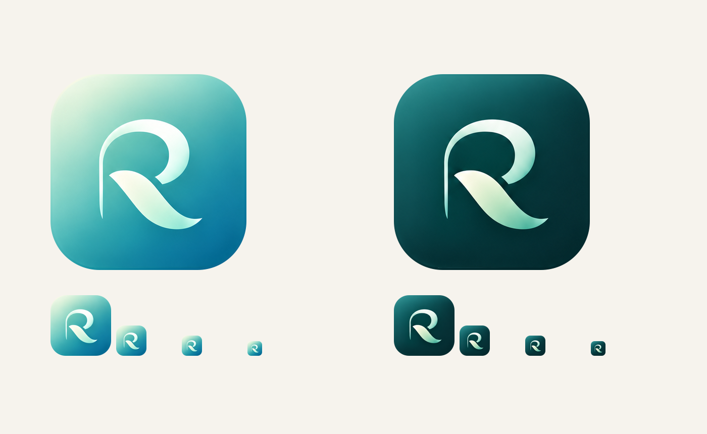

Rilova
Habits that fit real life.
Original approved artwork, extracted with its curves and shading preserved.

Gradient app icon · Dark app icon
Source icons are approximately 388 pixels across; the 1024-pixel files are interpolated exports.